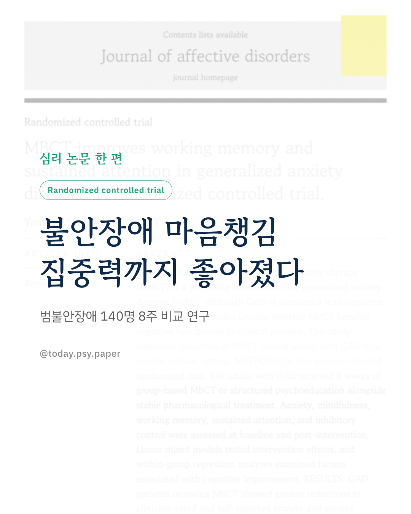
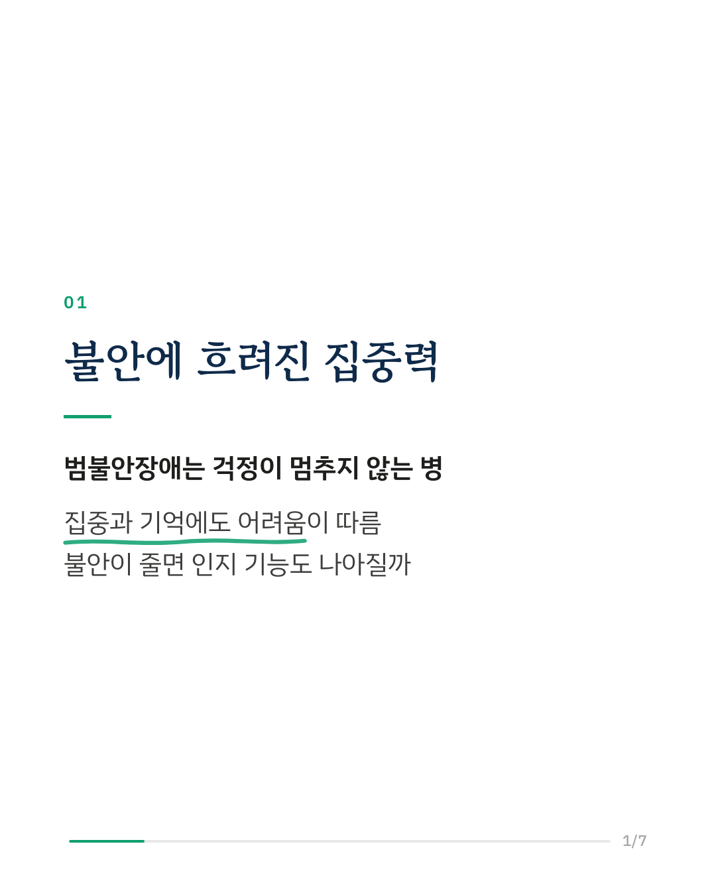
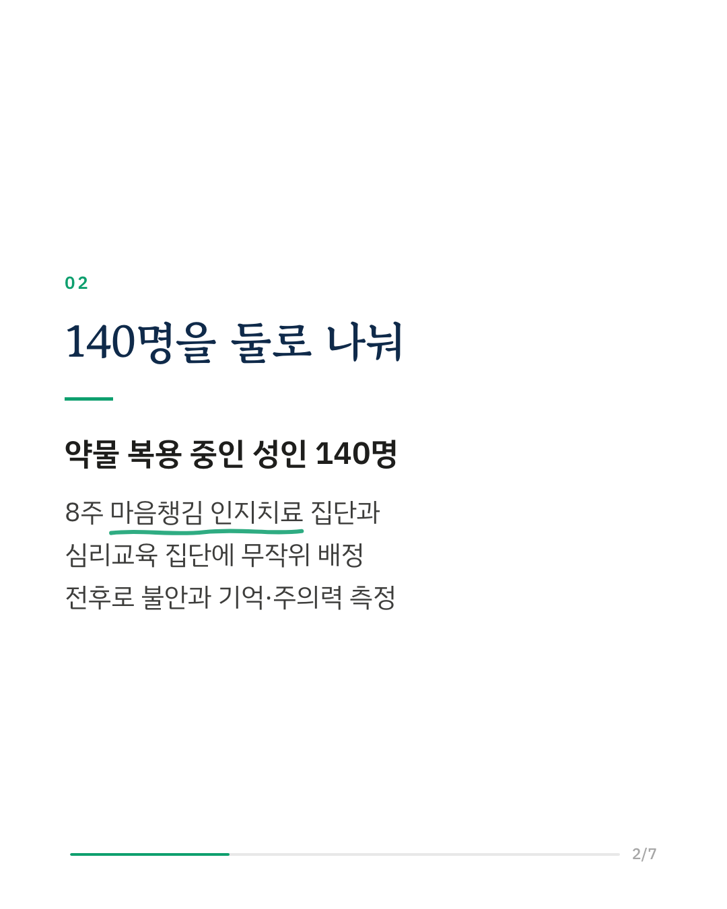
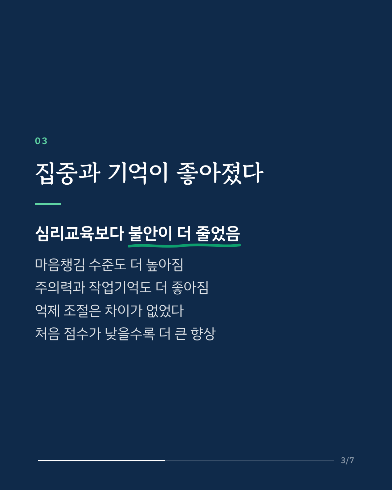
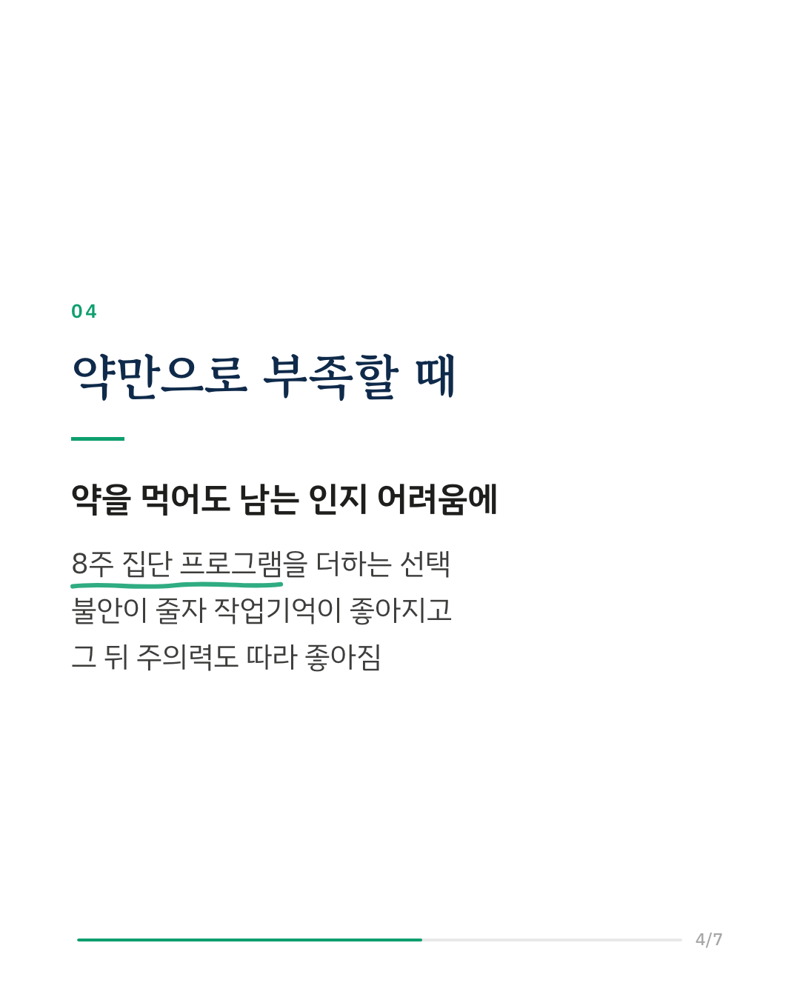
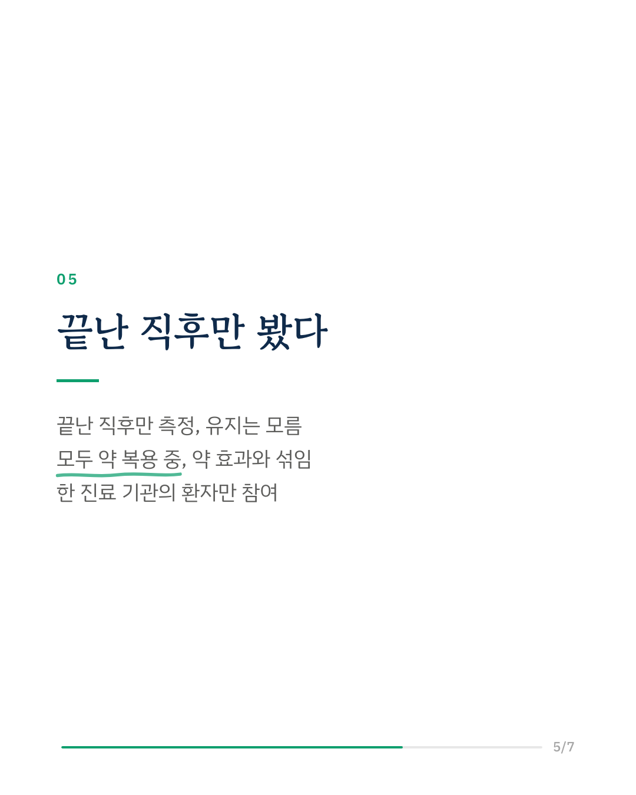
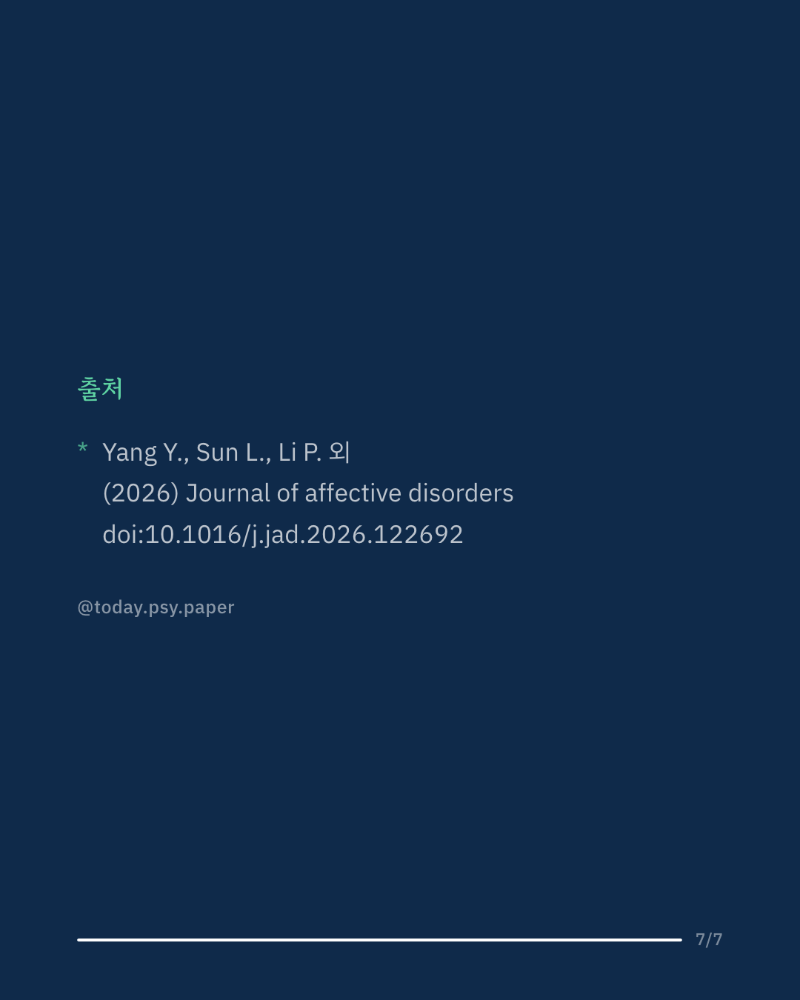

범불안장애는 걱정이 멈추지 않는 불안장애로, 집중과 기억 같은 인지 기능의 어려움이 함께 나타나는 경우가 많습니다. 마음챙김 기반 인지치료(MBCT)가 불안을 줄인다는 보고는 있었지만, 머리 쓰는 기능까지 좋아지는지는 분명하지 않았습니다. 연구진은 약을 복용 중인 범불안장애 성인 140명을 8주 집단 마음챙김 인지치료와 구조화된 심리교육에 무작위로 나누고, 전후에 불안과 작업기억, 지속 주의력, 억제 조절을 측정했습니다. 마음챙김 집단은 심리교육 집단보다 임상가 평가와 자가 보고 불안이 더 많이 줄었고, 마음챙김 수준과 지속 주의력, 작업기억도 더 좋아졌습니다. 충동을 억누르는 억제 조절은 두 집단 사이에 차이가 없었습니다. 마음챙김 집단 안에서는 처음 인지 점수가 낮았던 사람의 향상 폭이 더 컸고, 스스로 느낀 불안이 줄어든 정도가 작업기억 향상과, 이어서 주의력 향상과 관련이 있었습니다. 연구진은 일상 진료 현장에서도 마음챙김 인지치료가 불안을 줄이고 주의력과 작업기억을 좋아지게 할 수 있다고 봅니다. 다만 프로그램이 끝난 직후만 측정해 효과가 얼마나 유지되는지는 알 수 없고, 참가자가 모두 약을 복용 중이어서 약 없이도 같은 결과가 나올지는 이 연구로는 말할 수 없습니다. Journal of Affective Disorders (2026), 'MBCT improves working memory and sustained attention in generalized anxiety disorder: A randomized controlled trial' DOI: 10.1016/j.jad.2026.122692 #임상심리 #정신건강정보 #심리학연구 #논문리뷰 #범불안장애 #마음챙김 #불안장애 #작업기억
python3 publish.py 42982351